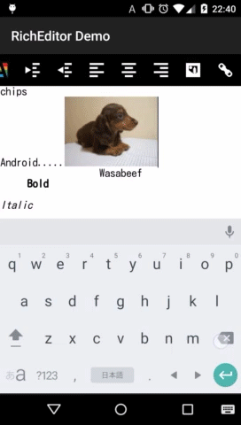
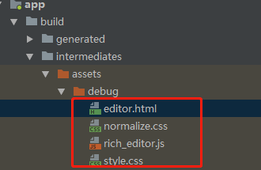

网上看到一个工程觉得挺神奇的，就是markdowm在安卓上的实现，开始我是觉得肯定用自定义View然后进行各种设置paint，但是最后打脸了。才知道其中有一个叫做富文本的东西RichEditor这个是网上一个开源的实现。我们下面大概看看代码

1
2
3
4
5
6
7
8
9
10
11
12
13
14
15
16
17
18
19
20
21
22
23
24
25
26
27
28
29
30
31
32
33
34
35
36
37
38
39
40
41
42
43
44
45
46
47
48
49
50
51
52
53
54
55
56
57
58
59
60
61
62
| public class RichEditor extends WebView {
public RichEditor(Context context) {
this(context, null);
}
public RichEditor(Context context, AttributeSet attrs) {
this(context, attrs, android.R.attr.webViewStyle);
}
@SuppressLint("SetJavaScriptEnabled")
public RichEditor(Context context, AttributeSet attrs, int defStyleAttr) {
super(context, attrs, defStyleAttr);
setVerticalScrollBarEnabled(false);
setHorizontalScrollBarEnabled(false);
getSettings().setJavaScriptEnabled(true);
setWebChromeClient(new WebChromeClient());
setWebViewClient(createWebviewClient());
loadUrl(SETUP_HTML);
applyAttributes(context, attrs);
}
private void applyAttributes(Context context, AttributeSet attrs) {
final int[] attrsArray = new int[] {
android.R.attr.gravity
};
TypedArray ta = context.obtainStyledAttributes(attrs, attrsArray);
int gravity = ta.getInt(0, NO_ID);
switch (gravity) {
case Gravity.LEFT:
exec("javascript:RE.setTextAlign(\"left\")");
break;
case Gravity.RIGHT:
exec("javascript:RE.setTextAlign(\"right\")");
break;
case Gravity.TOP:
exec("javascript:RE.setVerticalAlign(\"top\")");
break;
case Gravity.BOTTOM:
exec("javascript:RE.setVerticalAlign(\"bottom\")");
break;
case Gravity.CENTER_VERTICAL:
exec("javascript:RE.setVerticalAlign(\"middle\")");
break;
case Gravity.CENTER_HORIZONTAL:
exec("javascript:RE.setTextAlign(\"center\")");
break;
case Gravity.CENTER:
exec("javascript:RE.setVerticalAlign(\"middle\")");
exec("javascript:RE.setTextAlign(\"center\")");
break;
}
ta.recycle();
}
......
}
|
我们看到上面是利用加载了一个网页，然后通过使用js的方式进行操作。下面我们就分析这个网页是什么：
1
2
3
4
5
6
7
8
9
10
11
12
13
| <!DOCTYPE html>
<html>
<head>
<meta name="viewport" content="user-scalable=no">
<meta http-equiv="Content-Type" content="text/html; charset=UTF-8">
<link rel="stylesheet" type="text/css" href="normalize.css">
<link rel="stylesheet" type="text/css" href="style.css">
</head>
<body>
<div id="editor" contenteditable="true"></div>
<script type="text/javascript" src="rich_editor.js"></script>
</body>
</html>
|
主要就是一个空白区间对应的是一个文本编辑。核心操作是通过rich_editor.js完成的，下面我们大概看看js代码
1
2
3
4
5
6
7
8
9
| var RE = {};
RE.currentSelection = {
"startContainer": 0,
"startOffset": 0,
"endContainer": 0,
"endOffset": 0};
RE.editor = document.getElementById('editor');
|
对应给div设置css的代码如下，此时就能看出来是一个编辑区域
1
2
3
4
5
6
7
8
9
10
11
12
| #editor {
display: table-cell;
outline: 0px solid transparent;
background-repeat: no-repeat;
background-position: center;
background-size: cover;
}
#editor[placeholder]:empty:not(:focus):before {
content: attr(placeholder);
opacity: .5;
}}
|
下面这个代码就完成了选中范围
1
2
3
4
5
6
7
8
9
10
11
12
| document.addEventListener("selectionchange", function() { RE.backuprange(); });
RE.backuprange = function(){
var selection = window.getSelection();
if (selection.rangeCount > 0) {
var range = selection.getRangeAt(0);
RE.currentSelection = {
"startContainer": range.startContainer,
"startOffset": range.startOffset,
"endContainer": range.endContainer,
"endOffset": range.endOffset};
}
}
|
我们再来举个栗子。
1
2
3
4
5
6
7
|
RE.callback = function() {
window.location.href = "re-callback://" + encodeURI(RE.getHtml());
}
RE.getHtml = function() {
return RE.editor.innerHTML;
}
|
以上我们就知道了这种操作。那么我们的js文件在哪里呢？

我们的文件是在我们执行依赖包的时候下载的。